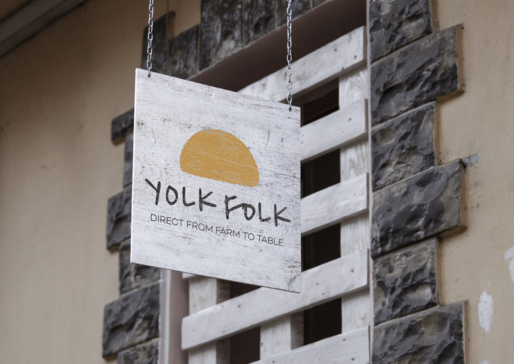
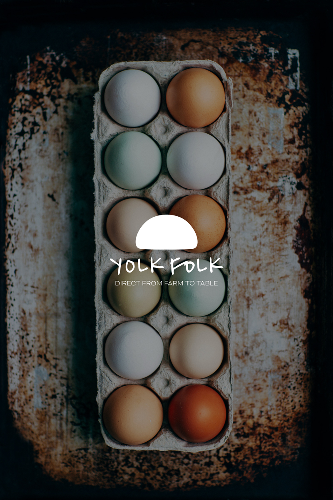

The visual idea
The rounded symbol and loose lettering give Yolk Folk an informal character. A compact set of shapes and colours carries that character from a simple logo composition to a hanging farm sign.
Personal projects / Self-initiated brand concept
A friendly farm identity with hand-drawn lettering, an egg-inspired symbol and earthy colour.

The rounded symbol and loose lettering give Yolk Folk an informal character. A compact set of shapes and colours carries that character from a simple logo composition to a hanging farm sign.
